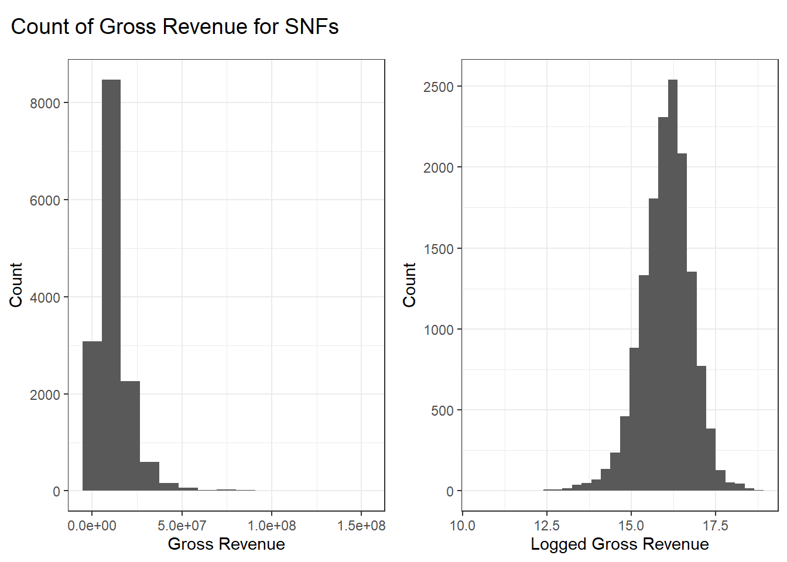
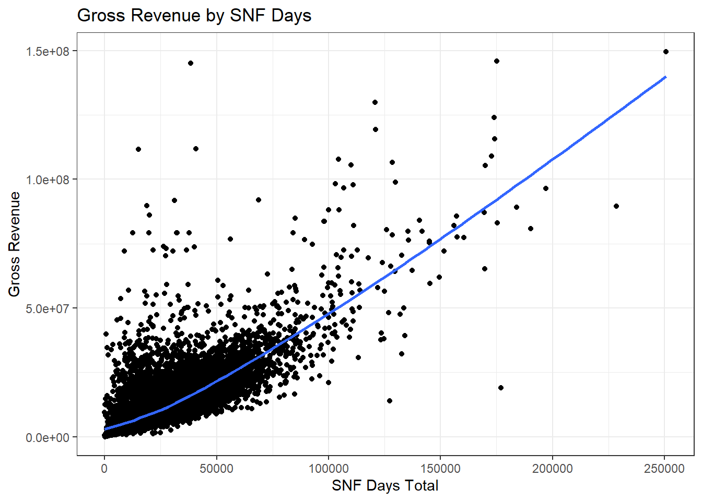
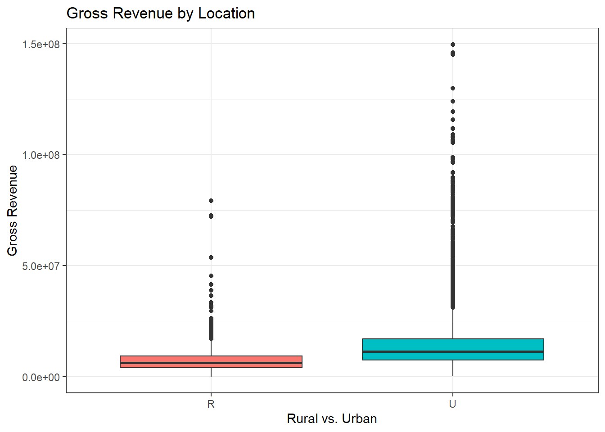
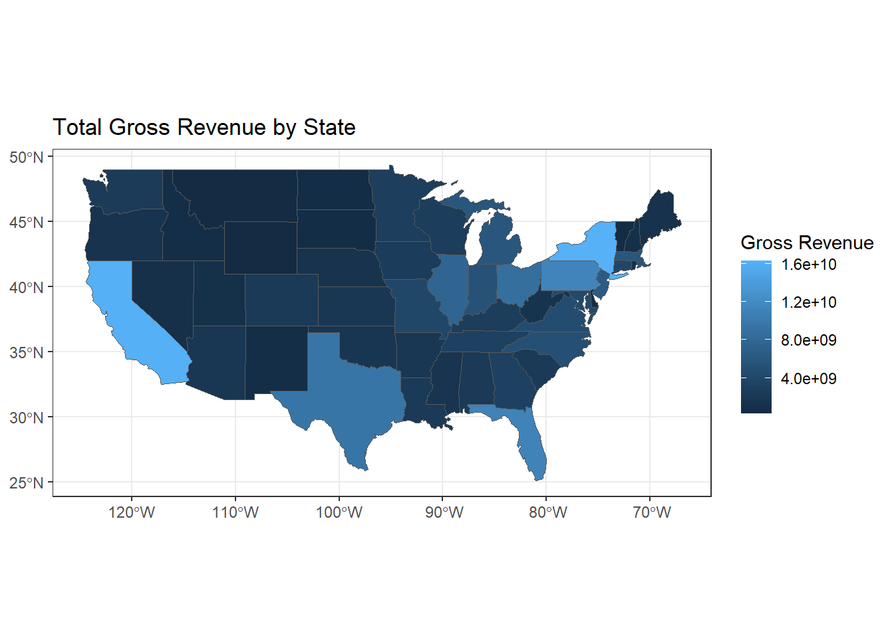
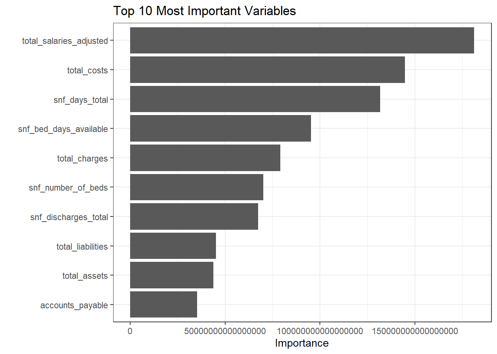

| min | Q1 | median | Q3 | max | mean | sd | n | missing | |
|---|---|---|---|---|---|---|---|---|---|
| 38757 | 5951397 | 9728984 | 14896433 | 149570724 | 12020386 | 9983429 | 14724 | 0 |
Algorithms Final Project
Predicting the Gross Revenue of Skilled Nursing Facilities
Introduction
Skilled Nursing Facilities (SNF) are nursing facilities that are typically used for short term visits where patients require a higher level of care than they can receive in a regular nursing facility. Patients in a SNF usually require medically intensive care and rehabilitation services following a hospital stay, surgery, or acute medical event.
Our data is from the cost report of all SNFs in the US in 2022. As these are Medicare-certified institutional providers, they are required to submit annual cost reports. Thus, we can be quite confident that the data is accurate. Our response variable is gross revenue which is the total patient revenue of the SNF in 2022. The explanatory variables fit into 2 categories, either SNF characteristics or SNF financials. Characteristics include location, type of ownership, and other variables such as average length of stay, number of available beds, and discharges. Financials include variables like total costs, salaries, liabilities, and income. We aim to use these explanatory variables to predict the gross revenue of SNF’s in 2022.
To clean the dataset, we selected variables that we thought would be most useful for predicting the gross revenue of the nursing facility based on the data dictionary. Originally, we included both skilled nursing facilities and regular nursing facilities, but we found that most facilities in the data were skilled facilities (n=14725), so we chose to remove the columns related to regular nursing facilities. We chose to remove the missing values from the rural vs urban column, since if that column had a missing value, then every other observation for that nursing home was also missing. We also removed the missing values from gross revenue since that is the response we are trying to predict. For the financial information, we kept columns that had fewer than 500 missing values and used the columns that were totals (total assets, total costs, etc) since these will give a more accurate understanding of the facilities financials. Our clean dataset has dimensions 14725 x 17.
Variables
| Variable | Variable Role | Type | Explanation |
|---|---|---|---|
| state_code | Explanatory | Categorical (52 levels) | The state of the SNF |
| rural_versus_urban | Explanatory | Categorical (2 levels) | If the SNF is in a rural or urban location |
| type_of_ownership | Explanatory | Categorical (3 levels) | Type of ownership: nonprofit, proprietary, government |
| snf_avg_stay_length | Explanatory | Numeric | The total average length of stay |
| snf_days_total | Explanatory | Numeric | The total number of inpatient days or visits |
| snf_bed_days_available | Explanatory | Numeric | Total bed days available, (num beds x num days) |
| snf_discharges_total | Explanatory | Numeric | Total number of discharges, including deaths |
| total_charges | Explanatory | Numeric | Total gross patient charges, includes charity care |
| total_salaries_(adjusted) | Explanatory | Numeric | Wages and salaries of all employees, including PTO |
| total_assets | Explanatory | Numeric | Sum of all assets, equipment, investments, etc |
| accounts_payable | Explanatory | Numeric | Amount due to trade creditors and for other supplies |
| total_liabilities | Explanatory | Numeric | Sum of all liabilities |
| total_fund_balances | Explanatory | Numeric | Total fund balances adjusted for restricted funds |
| gross_revenue | Response | Numeric | Total revenue from patients |
| total_income | Explanatory | Numeric | Total income of the SNF |
| total_costs | Explanatory | Numeric | Total costs of the SNF |
| snf_number_of_beds | Explanatory | Numeric | Number of beds available for patient use |
EDA
Analyzing our summary statistics for gross revenue which is measured in dollars. We can see that the minimum gross revenue for a skilled nursing facility is $38,757, where our max is $149,570,724, the IQR is $5,951,397 to $14,896,433, with the median being $9,728,984. These ranges could potentially be an issue for us.

Looking at the Figure 1 on the left, we can see that the range of the variable is affecting us being able to see the distribution, so we logged gross_revenue to see the distributions of revenues, on the right, we can see the logged revenues are normally distributed.
Bivariate/multivariate graphs showing the relationship between your response variable and other explanatory variables:

There are lots of values on our scatterplot (Figure 2) so it’s hard to tell if there is a positive or negative relationship between gross revenue and snf_total_days which is the total amount of days stayed in the SNF for that fiscal year which is 2022. Looking at our line of best fit we can see that as snf_days_total increases the gross revenue also increases there is a somewhat positive linear relationship shown here.

Gross revenue of skilled nursing facilities cannot be easily distinguishable by whether the nursing home is in a rural or urban area, we can see that we have a LOT of outliers in Figure 3. We can see that there is overlap in our boxplots and that the medians are near each other.

Visualizing our states in another way we can see the total gross revenue for each state. We can see that California, New York, Pennsylvania, Texas, and Florida have very large gross revenues. If a skilled nursing facility is in a certain state, it could contribute to the gross revenue.
Lasso Model Building
To predict the gross revenue for the SNFs, we first used a LASSO regression model.
For our regularization model, we chose to do a LASSO regression model since our dataset has 16 explanatory variables. We chose this model type because we hoped that some of our variables would be reduced to a coefficient of zero. To create this model, we first split the data using an 80-20 split and created 10 folds for cross validation for resampling to use to select our best model based off of the RMSE. Then we created the model specification and chose to optimize the penalty. To create the recipe we used all predictors and created indicator variables for all of our categorical variables. We chose to impute the median value for all of columns containing NA values, thus eliminating influence from large outliers. We also removed all variables that have zero variance and normalized all variables. Then, we created the workflow for the model. To optimize the penalty, we created a penalty grid with 10 levels and used tune grid on the folds to find the highest r-squared value. We also plotted the results to visualize them. Then we chose to select by the one standard error method to ensure that we have the penalty that will create the simplest model. The optimal penalty is 0.0000000001. Using the optimal penalty, we finalized the workflow and fit the model. Then, we created 50 bootstraps of the training data and found the average R-Squared and RMSE.
# set seed and split data
set.seed(12345)
snf_split <- initial_split(snf_clean, prop = 0.8)
snf_train_tbl <- training(snf_split)
snf_test_tbl <- testing(snf_split)
# Create 10 cross-validation folds
snf_fold_10 <- vfold_cv(snf_train_tbl, v = 10)
# create the model specification, recipe, and workflow
snf_lasso_spec <-
linear_reg(mixture = 1, penalty= tune()) |> # penalty is tuneable
set_mode("regression") |>
set_engine("glmnet")
snf_lasso_recipe <-
recipe(formula = gross_revenue ~ ., data = snf_train_tbl) |>
step_dummy(all_nominal_predictors()) |>
step_impute_median(snf_avg_stay_length,
snf_days_total,
snf_number_of_beds,
snf_bed_days_available,
snf_discharges_total,
total_charges,
total_costs,
total_assets,
accounts_payable,
total_liabilities,
total_fund_balances,
total_income) |>
step_zv(all_predictors()) |>
step_normalize(all_predictors())
snf_lasso_wf <- workflow() |>
add_recipe(snf_lasso_recipe) |>
add_model(snf_lasso_spec)
# create the grid used to find the best penalty
penalty_grid <-
grid_regular(penalty(), levels = 10)
snf_tune_res <- tune_grid(
snf_lasso_wf,
resamples = snf_fold_10,
grid = penalty_grid
)
# use select by one std error to find the best and simplest model
best_penalty <- select_by_one_std_err(snf_tune_res, metric = "rsq", penalty)
# redo the workflow and fit the model with the best penalty
snf_lasso_final_wf <- finalize_workflow(snf_lasso_wf, best_penalty)
snf_lasso_final_fit <- fit(snf_lasso_final_wf, snf_train_tbl)Lasso Model Refinement
After thoroughly observing the variable descriptions, we’ve determined that the variables are so different that its not worth removing any of them. When we tried doing this, the model trivially got worse. Also, since the variables are all unique, there aren’t any good options of new variables to make using combinations of the variables we already have. Thus, for our model refinement, what we did was we decided to focus on correlation between variables just to verify that none need to be removed.
To determine how to refine the model, we found the correlation between some of the numeric predictors that we thought might have higher correlation.
| total_salaries_adjusted | snf_days_total | total_charges | snf_discharges_total | total_costs | |
|---|---|---|---|---|---|
| total_salaries_adjusted | 1.0000000 | 0.6697811 | 0.4120877 | 0.4711019 | 0.6601443 |
| snf_days_total | 0.6697811 | 1.0000000 | 0.4355510 | 0.5625510 | 0.6322542 |
| total_charges | 0.4120877 | 0.4355510 | 1.0000000 | 0.5584610 | 0.7649576 |
| snf_discharges_total | 0.4711019 | 0.5625510 | 0.5584610 | 1.0000000 | 0.6585187 |
| total_costs | 0.6601443 | 0.6322542 | 0.7649576 | 0.6585187 | 1.0000000 |
It is evident that the numeric variables are not significantly highly correlated and this is shown in the correlation matrix above. The highest correlation is between total costs and total charges with a coefficient of 0.765 which isn’t too strong. We decided that there are not any necessary adjustments to make to the LASSO model.
Tree Model Building
Next, we decided to use a CART decision tree.
We developed a decision tree regression model to predict gross revenue using the CART method since the there were complications in creating a decision tree using the Random Forest method with our data. We again used a 80-20 split for a testing and training datasets, and created 10 folds for cross-validation. We used the same recipe where we used all predictors and created indicator variables for all of our categorical variables. We also imputed the median value for all of columns containing NA values and removed all variables that have zero variance and normalized all variables. The model, specified with the rpart engine, included a tunable cost_complexity parameter. Then, we created the workflow for the model using the model and the recipe. A grid of 10 complexity levels was created. To optimize our RMSE by using our workflow, 10 folds we created and the grid of complexity levels, we were able to cross-validate the optimal value. The one standard error method was used to select the final complexity value of 0.0000000001. The final model was trained with the best complexity value and evaluated on the bootstraps from the training data, with RMSE and R-Squared computed to assess its predictive accuracy.
Tree Model Refinement
In the original model, even though we used the one standard deviation technique to find the most simple model in our grid, it didn’t make the resulting tree any more simple. This was because our original grid only contained massively complicated trees. Thus, we chose to refine our model by changing the cost complexity grid in order for the model to actually be visible in our plot (and so that we could see the important variables in the model). It makes sense why we had to do this since the cost complexity can’t allow the tree to get too crazy since we have so many variables which makes it easy to have a ridiculously deep tree with tons of interactions.
For the refinement, we set the cost complexity to be tuneable between -2.5 and 1. Then, we created 50 bootstraps of the training data and found the average R-Squared and RMSE.
A limitation to this refinement is that our RMSE is a little worse and our R-Squared ends up being better, but then our tree only has 6 levels instead of the ridiculous amount of levels that the original model had. Our RMSE in the new model is $5,435,712 as opposed to $5,445,108 in our original model and our \(R^2\) is 0.71 as opposed to 0.701 in our original model. Overall the model is a lot more simple, but a bit worse at making predictions of the SNFs gross revenue as a consequence.
Random Forest Model Building
Finally, we will build a Random Forest model.
We developed this forest model to predict gross revenue using the ranger engine since we want all of our variables to be used a decent amount in the trees decision making (splits). We again used a 80-20 split for a testing and training datasets, and created 10 folds for cross-validation. We used the same recipe where we used all predictors and created indicator variables for all of our categorical variables. We also imputed the median value for all of columns containing NA values and removed all variables that have zero variance and normalized all variables. The model, specified with the ranger engine, included a tunable mtry parameter which is the number of randomly selected candidate variables in a decision (split) made in the tree. Then, we created the workflow for the model using the model and the recipe. A grid of 10 mtry levels was created containing the range 1 to 17 since that is how many variables are in our dataset. We optimized the procedure using the RMSE metric. The one standard error method was used to select the final mtry value of 6 which is expected as we expect mtry to be # of vars / 3 which for us is 17/3 which rounds to 6. The final model was trained with the best mtry value and evaluated on the bootstraps from the training data, with RMSE and R^2 computed to assess its predictive accuracy.
Random Forest Model Refinement
For our model refinement, we attempted to remove snf days total since we had a feeling that it might be somewhat similar to revenue. We were curious to see the results of the model without the variable. The adjustments that had to be made were to remove the variable in the recipe and change the upper bound of the grid to be one less since we now have 16 variables to work with.
The \(R^2\) and RMSE again calculated with the best mtry and evaluated on the boostraps from the training dataset. The \(R^2\) shows that this model is a tad worse as only 0.802 compared to 0.809 in the unrefined model. The RMSE is also worse as it is $4,554,068 compared to $4,455,595 in the unrefined model. Thus, our original forest model is slightly better.
Conclusion
| Model | RMSE | \(R^2\) |
|---|---|---|
| Lasso | 5,237,130 | 0.726 |
| Regression Tree | 5,445,108 | 0.710 |
| Regression Tree (refined) | 5,435,712 | 0.701 |
| Random Forest | 4,455,595 | 0.809 |
| Random Forest (refined) | 4,554,068 | 0.802 |
We used a Lasso model, Regression Tree, and Random Forests to predict the gross income of SNF’s around the U.S. Our two best models based off the R-Squared and RMSE based off of the bootstrap samples were the two Ranger Models. Thus, we choose the unrefined Random Forest model as our final model to augment with the testing dataset.
| .metric | .estimator | .estimate |
|---|---|---|
| rmse | standard | 4392594.909 |
| rsq | standard | 0.815 |
| mae | standard | 2210892.811 |

We can see that the Random Forest explains 81.5% of the variability in gross revenue and the RSQ is $4,392,594. Looking at the vip most important variables, the top 5 are adjusted total salaries, total costs, total snf days, snf bed days available, and total charges. Thus, we conclude these variables are influential in determining gross revenue and that Random Forest is best at predicting the gross revenue, likely because the many explanatory variables were able to be more accurately assessed by using multiple decision trees.